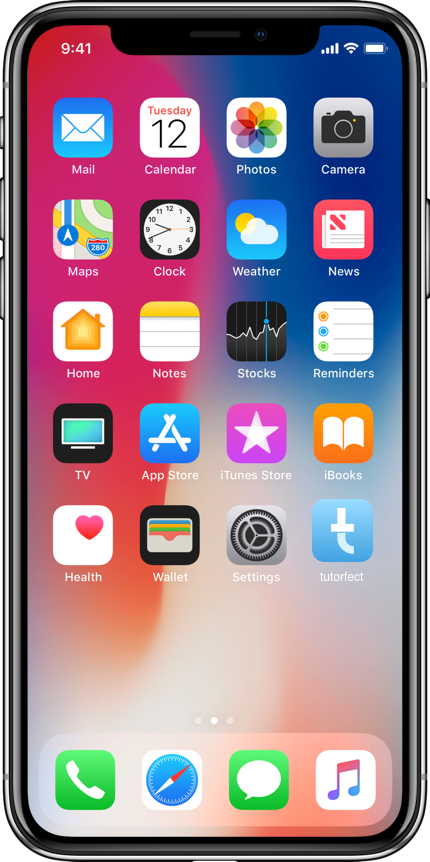
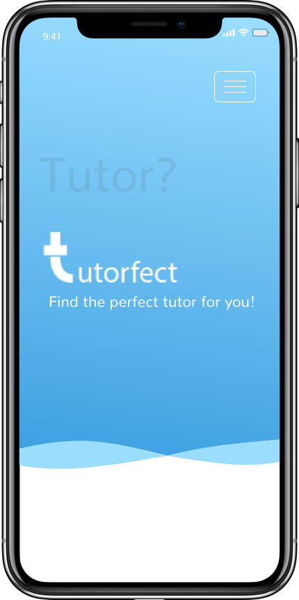

App Screenshots
App Screenshots



Find the perfect tutor!
The inspiration for the creation of tutorfect has came from a personal experience as a student in web development. I wanted to create a source where students could find reliable and educated professionals or students in the digital media field that are able to help in areas of struggle. As our professors are always there to help, sometimes we need a little extra help outside of class time. So tutorfect gave me the notion to create an all in one app where students on their own could find the perfect tutor who could give additional help in programming languages, web design, and other digital media platforms. I have created tutorfect to be convenient, helpful, and user friendly with a modern design concept that will help engage students to learn and find the perfect tutor.
Designed to serve it's purpose with modern and clean design principles that makes it enjoyable for all students to find their tutors.
Gives the ability for students and tutors to populate their profile as they desire and make posts to find what they need.
Built with user friendly functionality to easily navigate through the app and find the perfect tutor for your needs.
Students & Tutors can register, create a profile showcasing their skills, talents, email, and education they have, create posts, comment on them, contact tutors by their contact information listed on their profiles, and search for tutors all in one app.
This app focuses on students and how challenging it is to find the perfect tutor to help you where you struggle the most in the digital media field.
Students will also be able to download the app on their mobiles as a progressive web app!
A fast and simple way to search and find a tutor for all the areas in the digital media field.
Find professionals who have the skills sets in the digital media field without the need of outside sources.
Created in a Laravel framework to utilize the use of modern and current clean code for a full-stack app!
Find your perfect tutor who specializes in the programming languages you need help with!
Search for tutors, students, and key words to help narrow down your search to find your perfect tutor!
A modern take on simplicity using colors that lean more towards the cooler side of the wheel & flattering gradients to make it pop!
tutorfect has been created in a Laravel framework focusing on LAMP stack with a relational database while making it user friendly. The app focuses on specifically back-end functionality as well as using front-end languages such as CSS3 & Vanilla JavaScript to enhance the user’s experience.
Firebase is also incorporated as it hosts the app as a progressive web app so students can download on their mobiles for easy convenience.
My name is Karlee Fruin and I am the creator of tutorfect. I am currently enrolled and finishing up my last term in the Interactive Media Specialist Program at Fanshawe College. Before this program I completed the Interactive Media Design Program at Fanshawe College that has educated and allowed me to develop skills in web development, web design, and video creations. I have had the opportunity to develop and utilize skills sets in the wide range of digital media from front-end to back-end development as well as app development and project management.